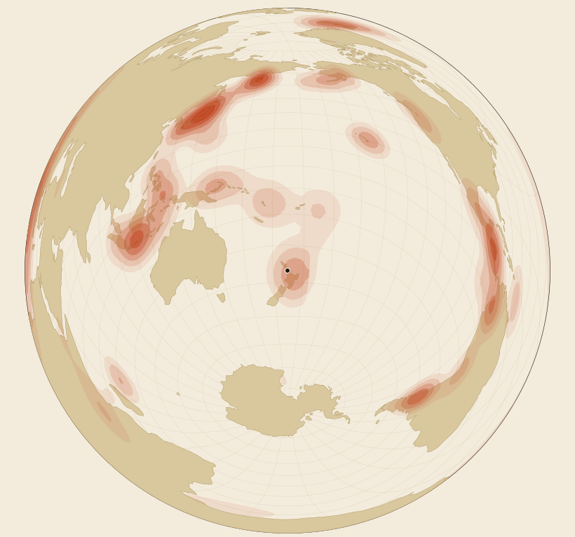
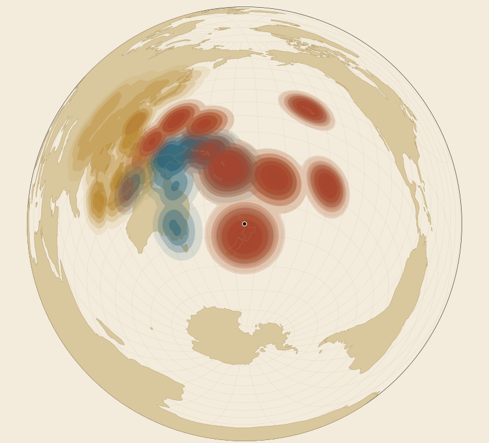

◆ Geodynamics
Convulsions
Fire, water, and a changing sky over Aotearoa — from a drowned continent to the climates ahead.
Enter the atlas →

◆ Sociodynamics
Landfalls
The arrivals that made Aotearoa New Zealand — navigators, settlers, miners, and the families who followed.
Enter the atlas →